| Foto | Nome | Data de Nascimento | Instrumento |
| 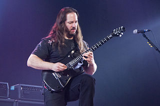 | John Petrucci | 12/07/1967 | Guitarra - Backing Vocal |
| 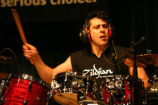 | Mike Mangini | 18/04/1963 | Baterista |
| 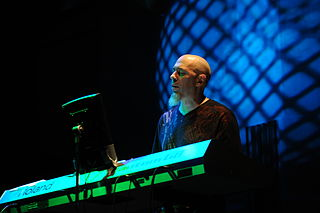 | Jordan Rudess | 04/11/1954 | Tecladista |
| 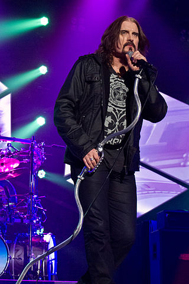 | James Labrie | 05/05/1963 | Vocalista |
| 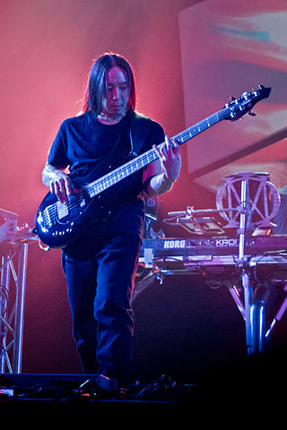 | John Myung | 24/01/1967 | Baixista |
| Capa | Nome | Ano De Lançamento |
| 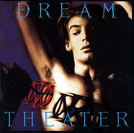 | When Dream and Day Unite | 1989 |
| 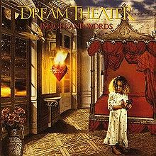 | Images and Words | 1992 |
| 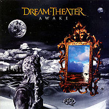 | Awake | 1994 |
| 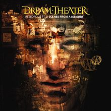 | Metropolis | 1999 |
| 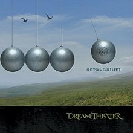 | Octavarium | 2005 |
| A Dramatic Turn of Events | 2011 | |
| 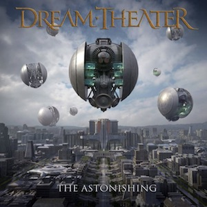 | The Astonishing | 2016 |